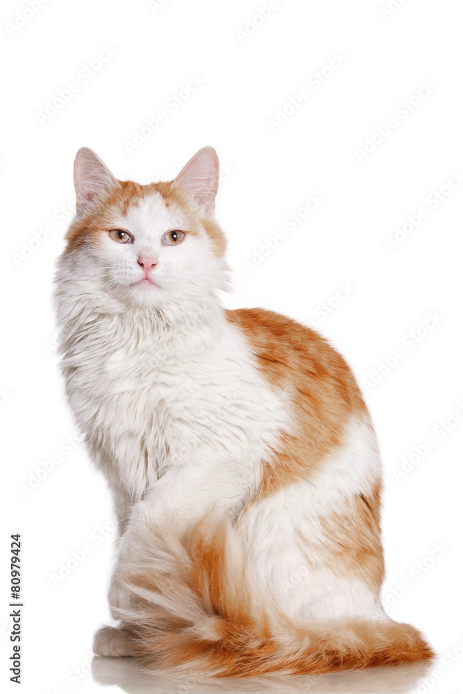

| Ім'я | Міся |
|---|---|
| Порода | Простий котик, риженький з білими плямами |
| Вік | 7 років |
| Колір | Рудий-Білий |
| Характер | Любить лише спати та їсти, інколи гратися та щоб його гладили |
| Робота | Інколи підпрацьовує в гіпермаркеті Епіцентр на рекламних щитах |
Міся з'явився у нашій сім'ї в 2018 році. Був дуже маленьким, але з перших днів встановив свої правила проживання з ним.
Міся любить:
Не любить:
© 2026 Сайт про Місю